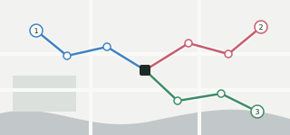
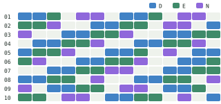

Give your solver
a playbook.
Package your engine’s inputs, constraints and analysis steps in one open format. Apps and AI agents can follow the same playbook and check the result.
Plan tomorrow’s deliveries.
Keep vehicle loads and delivery windows within their limits.


Open the full-size figure- Routes
- 3
- Stops
- 10
- Unassigned
- 0
Build next month’s nurse roster.
Balance the workload while respecting time off and rest between shifts.


Open the full-size figure- Nurses
- 10
- Unmet demand
- 0
- Rule violations
- 0
Set a reorder policy for each product.
Choose reorder points and order quantities to meet the service target.
 Open the full-size figure
Open the full-size figure- Products
- 12
- Policies
- 12
- Horizon
- 30 days
What an OCP server shares
The developer who knows the engine describes how to use it. Each client can read the same description.
Read the server authoring guide- Engine interface
- Declare accepted inputs, units, objectives and supported constraints.
- Analysis playbooks
- Describe which scenarios to run and which metrics to compare on a common basis.
- Result checks
- Return the status and measured values so a separate checker can verify the solution.
How an agent uses OCP
Connect an AI agent- Discover
Read the engine’s capabilities and input schema.
- Validate
Ask for missing inputs and check constraints.
- Execute
Run the solver or the selected playbook.
- Evaluate
Inspect feasibility, cost and the scope of verification.
Preview downloads
Core 0.1 and the native v1 candidate are public source previews.
Server format preview · Native ZIP & SHA256SUMS · Build native v1 · Compare formats